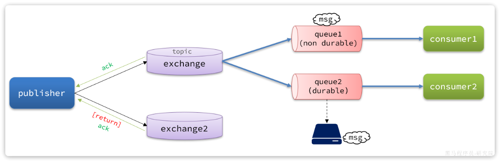

生产者的可靠性
消息从生产者出发，有三个丢失点：
生产者 ──① 网络抖动，连接 MQ 失败──> MQ
生产者 ──② 到达交换机，但路由不到队列（路由键写错/队列不存在）──> 消息被丢弃
生产者 ──③ 发送代码还没执行，进程就崩了（业务已成功）──> 消息根本没发出去
| 丢失点 | 解决手段 |
|---|---|
| ① 连接失败 | 生产者重试机制（template.retry） |
| ② 路由失败 | Publisher Return（交换机退回）+ Confirm ack |
| ② 交换机不存在 | Publisher Confirm（nack 回执） |
| ③ 进程崩溃 | 本地消息表 + 定时补偿 |
单靠 Confirm/Return 只能「感知」丢失，不能「挽回」——感知到之后必须能重新拿到原消息重发，
这就是本地消息表存在的意义。四层手段层层递进，缺一层就有一类丢失兜不住。
1. 生产者重试机制
首先第一种情况，就是生产者发送消息时，出现了网络故障，导致与MQ的连接中断。
为了解决这个问题，SpringAMQP提供的消息发送时的重试机制。即：当RabbitTemplate与MQ连接超时后，多次重试。
修改publisher模块的application.yaml文件，添加下面的内容：
spring:
rabbitmq:
connection-timeout: 1s # 设置MQ的连接超时时间
template:
retry:
enabled: true # 开启超时重试机制
initial-interval: 1000ms # 失败后的初始等待时间
multiplier: 1 # 失败后下次的等待时长倍数，下次等待时长 = initial-interval * multiplier
max-attempts: 3 # 最大重试次数
两个必须知道的坑：
-
[!IMPORTANT]
这是阻塞式重试——重试等待期间当前线程被卡住（1s×3 次就是 3 秒）。
Tomcat 线程池一共就几十个线程，MQ 宕机时所有发消息的请求都卡住 = 服务雪崩。
生产建议：要么禁用改由本地消息表补偿，要么把发送丢进异步线程。 -
它只解决「连接不上」，消息发出去了但路由失败，重试帮不了你（MQ 会正常接受消息再丢弃）。
2. 生产者确认机制
一般情况下，只要生产者与MQ之间的网路连接顺畅，基本不会出现发送消息丢失的情况，因此大多数情况下我们无需考虑这种问题。
不过，在少数情况下，也会出现消息发送到MQ之后丢失的现象，比如：
- MQ内部处理消息的进程发生了异常
- 生产者发送消息到达MQ后未找到
Exchange - 生产者发送消息到达MQ的
Exchange后，未找到合适的Queue，因此无法路由
针对上述情况，RabbitMQ提供了生产者消息确认机制，包括Publisher Confirm和Publisher Return两种。在开启确认机制的情况下，当生产者发送消息给MQ后，MQ会根据消息处理的情况返回不同的回执。
具体如图所示：

总结如下：
- 当消息投递到MQ，但是路由失败时，通过Publisher Return返回异常信息，同时返回ack的确认信息，代表投递成功（出现的概率极少）
- 临时消息投递到了MQ，并且入队成功，返回ACK，告知投递成功
- 持久消息投递到了MQ，并且入队完成持久化，返回ACK ，告知投递成功
- 其它情况都会返回NACK，告知投递失败
其中ack和nack属于Publisher Confirm机制，ack是投递成功；nack是投递失败。而return则属于Publisher Return机制。
默认两种机制都是关闭状态，需要通过配置文件来开启。
Publisher Confirm 和 Publisher Return 的核心区别在于它们把守着消息发送过程中的不同阶段。
在 RabbitMQ 中，一条消息从生产者发出到最终存入队列，必须经过两个节点：
生产者 (Producer) ——> 交换机 (Exchange) ——> 队列 (Queue)
这两个机制就是为了分别监控这两个箭头的流转状态。以下是它们的详细对比：
核心区别对比表
| 维度 | Publisher Confirm (确认机制) | Publisher Return (退回机制) |
|---|---|---|
| 监控阶段 | 生产者 ——> 交换机 | 交换机 ——>队列 |
| 核心目的 | 确认消息是否成功到达了 RabbitMQ 的交换机。 | 确认到达交换机的消息，是否成功被路由到了队列。 |
| 返回信号 | ack (投递成功) / nack (投递失败) | returnedMessage (将完整的消息体原路退回) |
| 触发成功的场景 | 消息完好无损地抵达了指定的 Exchange。 | 消息根据 RoutingKey 找到了匹配的 Queue。 (成功时不会触发任何回调) |
| 触发失败的场景 | 1. 交换机名称写错/不存在。 2. 网络闪断，根本没连上 MQ 服务器。 3. MQ 内部发生严重异常。 | 1. 路由键 (RoutingKey) 拼写错误。 2. 交换机没有绑定任何队列。 |
| 配置属性 | publisher-confirm-type: correlated |
publisher-returns: true |
形象比喻（寄快递）
- Publisher Confirm（寄件确认）：
你把快递包裹交给了快递中转站（Exchange）。
- 中转站收到了，给你盖了个章说“已揽收
ack。 -
中转站由于某种原因（比如站点倒闭了、你走错门了）拒收你的包裹
nack。 -
Publisher Return（查无此人退回）：
快递中转站（Exchange）已经收下你的包裹了（Confirm 返回了 ack），但是当他们准备把包裹装上发往目的地的货车（Queue）时，发现你写的收件地址（RoutingKey）是个假地址，根本找不到对应的货车。
- 此时，中转站只能把这个包裹原封不动地退回（Return）给你。
总结
因为交换机（Exchange）本身是没有存储消息的能力的，它只负责“转发”。如果只开启 Confirm 机制，遇到路由失败的情况（拿到 ack，但消息被丢弃），消息依然会丢失。
因此，Confirm 和 Return 必须组合使用，才能实现发送端 100% 的消息可靠投递保障。
3. 实现生产者确认
1. 开启（yml）
实现发布确认（Publisher Confirm）的核心是开启 correlated 确认模式，并在发送消息时传入包含全局唯一 ID 的 CorrelationData，以便在回调中识别具体是哪条消息收到了 Broker 的 ACK/NACK。
publisher-confirm-type 支持三种模式：
NONE：关闭确认机制（默认）。CORRELATED：异步回调，消息关联CorrelationData，推荐生产使用。SIMPLE：同步等待确认（性能极差，不推荐）。
实现退回机制（Publisher Return）的核心是 开启配置 mandatory=true 并给 RabbitTemplate 注册 ReturnsCallback 监听器。
退回机制要求 Broker 在找不到匹配 Queue 时将消息退回，必须设置 mandatory: true，否则未路由的消息会被 MQ 直接静默丢弃
spring:
rabbitmq:
publisher-confirm-type: correlated # 异步回调回执（推荐；none=关闭，simple=同步阻塞）
publisher-returns: true # 开启路由失败退回
template:
#核心参数：必须设为true，路由失购时才会触发ReturnsCallback；若为false，MQ会直接丢弃该消息
mandatory: true
2. 退回机制（return）
全局 ReturnsCallback
每个 RabbitTemplate 只能设一个 ReturnsCallback（一次配置，处处生效），放配置类统一设置
@Configuration
@Slf4j
public class RabbitReturnConfig {
@Autowired
private CompensationService compensationService; // 注入你的业务补偿服务
@Bean
public RabbitTemplate rabbitTemplate(ConnectionFactory connectionFactory) {
RabbitTemplate rabbitTemplate = new RabbitTemplate(connectionFactory);
// 1. 确保 mandatory 属性开启
rabbitTemplate.setMandatory(true);
// 2. 注册全局退回监听器
rabbitTemplate.setReturnsCallback(returned -> {
// 解析退回数据
log.error("【MQ消息路由失败】交换机={}, 路由键={}, 应答码={}, 应答文本={}, 消息={}",
returned.getExchange(), returned.getRoutingKey(),
returned.getReplyCode(), returned.getReplyText(),
new String(returned.getMessage().getBody()));
// 从 MessageProperties 的 Header 中提取发送时注入的全局消息 ID
String messageId = returned.getMessage()
.getMessageProperties()
.getHeader("spring_returned_message_correlation");
// 3. 执行异步业务补偿逻辑（修改本地消息表/发送钉钉告警）
compensationService.handleRouteFailure(messageId, replyText);
});
return rabbitTemplate;
}
}
在发送消息时，把业务主键或消息 ID 注入到 Header 中，确保回调时能够定位是哪条记录路由失败：
@Service
public class OrderPublisher {
@Autowired
private RabbitTemplate rabbitTemplate;
public void sendOrder(String orderId, Object orderData) {
// 构建消息处理：将 orderId 设置到 Message Header 中，供 ReturnsCallback 读取
MessagePostProcessor messagePostProcessor = message -> {
message.getMessageProperties().setHeader("spring_returned_message_correlation", orderId);
return message;
};
// 发送消息
rabbitTemplate.convertAndSend(
"order.exchange",
"order.created.invalid_key", // 故意拼错的 RoutingKey 用来测试退回机制
orderData,
messagePostProcessor
);
}
}
核心注意事项
mandatory参数必传：如果不配置spring.rabbitmq.template.mandatory=true，即便写了ReturnsCallback代码，路由失败时也永远不会被触发。- 唯一性约束：每一个
RabbitTemplate实例只能注册一个ReturnsCallback。如果项目中多处设置，后设置的会覆盖前面的。 - 异步线程隔离：
ReturnsCallback的回调方法是在 RabbitMQ 的 NIO 监听线程中执行的，千万不要在回调函数内做同步阻塞操作（如大 SQL 查询、远程 HTTP 调用），必须通过@Async或自建线程池异步处理补偿逻辑。
3. 确认机制（confirm）
1. 全局 ConfirmCallback
在 RabbitTemplate 配置类里面中注册发布确认回调监听器：
@Configuration
@Slf4j
public class RabbitConfirmConfig {
@Autowired
private CompensationService compensationService; // 注入业务补偿服务
@Bean
public RabbitTemplate rabbitTemplate(ConnectionFactory connectionFactory) {
RabbitTemplate rabbitTemplate = new RabbitTemplate(connectionFactory);
// 设置发布确认回调
rabbitTemplate.setConfirmCallback((correlationData, ack, cause) -> {
// 获取发送时传入的唯一消息 ID
String messageId = correlationData != null ? correlationData.getId() : "UNKNOWN";
if (ack) {
log.info("【MQ发布确认】消息成功送达 Exchange, MessageId: {}", messageId);
// 可在此处将本地消息表状态修改为 SUCCESS（发送成功）
compensationService.updateStatusToSuccess(messageId);
} else {
log.error("【MQ发布确认失败】消息未能送达 Exchange, MessageId: {}, 原因: {}", messageId, cause);
// 触发失败补偿逻辑（如重试或标记为待重试状态）
compensationService.handleSendFailure(messageId, cause);
}
});
return rabbitTemplate;
}
}
发送消息时，必须构建并传入 CorrelationData。如果未传该参数，当回调发生时 correlationData 将为 null，导致无法追踪具体是哪条消息成功或失败：
@Service
public class OrderPublisher {
@Autowired
private RabbitTemplate rabbitTemplate;
public void sendOrderMessage(String orderId, Object orderData) {
// 1. 使用业务主键或全局唯一 ID 创建 CorrelationData
CorrelationData correlationData = new CorrelationData(orderId);
// 2. 发送消息时，将 correlationData 作为最后一个参数传入
rabbitTemplate.convertAndSend(
"order.exchange",
"order.created",
orderData,
correlationData
);
}
}
2. 局部 ConfirmCallback
生产环境推荐使用“局部确认”（基于 CorrelationData 的 Future 回调）
Confirm 回调跟随消息走，所以每次发送时通过 CorrelationData 定制
// 1. 创建 CorrelationData（用业务 ID 或消息 ID 标识）
CorrelationData cd = new CorrelationData(messageId);
// 2. 挂载回调
cd.getFuture().whenComplete((confirm, ex) -> {
// 处理连接异常或 Channel 关闭引发的 Future 异常
if (ex != null) {
log.error("[Confirm] 发送异常，messageId={}", messageId, ex);
updateStatus(messageId, 2); // 标记失败，等待定时任务补偿
return;
}
// 处理 Broker 的 Ack / Nack 响应
if (confirm != null && confirm.isAck()) {
updateStatus(messageId, 1); // ACK -> 成功确认
} else {
String reason = (confirm != null) ? confirm.getReason() : "未知原因";
log.error("[Confirm] NACK 拒绝接收，messageId={}, reason={}", messageId, reason);
updateStatus(messageId, 2); // NACK -> 失败，等待补偿
}
});
// 3. 必须携带 cd 发送消息
rabbitTemplate.convertAndSend(exchange, routingKey, payload, cd);
三个高频踩坑
- 不带 cd 发送 = 回调永远不触发。
convertAndSend(exchange, key, msg)三参重载没有回执通道，MQ 回了 nack 你也收不到——「配置全对却毫无反应」基本都是这个原因。 - onSuccess ≠ 发送成功。回调进 onSuccess 只代表「MQ 给了回执」，要看
result.isAck()才知道是 ack 还是 nack。 - cd 的 id 必须 = 本地消息表的 messageId，否则回执到达时无法定位要更新的记录，Confirm 机制和业务就断链了。
4. 最佳实践方案
为了既保留“局部确认”的灵活性，又避免在业务代码里重复编写冗长的 Future 回调，确认机制建议封装统一的发送工具类：
@Component
@Slf4j
public class ReliableMqPublisher {
@Autowired
private RabbitTemplate rabbitTemplate;
/**
* 发送可靠消息（带局部确认回调）
*/
public void send(String exchange, String routingKey, Object payload, String messageId, Consumer<Boolean> callback) {
CorrelationData cd = new CorrelationData(messageId);
// 局部挂载 Confirm 处理
cd.getFuture().whenComplete((confirm, ex) -> {
boolean isSuccess = (ex == null && confirm != null && confirm.isAck());
if (!isSuccess) {
log.error("[MQ Confirm] 消息投递失败, messageId={}, reason={}",
messageId, ex != null ? ex.getMessage() : confirm.getReason());
}
// 执行调用方传入的特定业务逻辑（如更新本地消息表状态）
if (callback != null) {
callback.accept(isSuccess);
}
});
rabbitTemplate.convertAndSend(exchange, routingKey, payload, cd);
}
}
配置建议总结：
- ConfirmCallback（送达 Broker 确认）：写局部（或通过工具类封装局部）。
- ReturnCallback（交换机路由失败退回）：写全局（因为路由失败通常是 Exchange/RoutingKey 配置错误或队列不存在，属于系统级异常，适合全局打日志告警）。
4. 本地消息表
Confirm/Return 解决不了的三个场景：
- ack 在网络中丢了（MQ 其实收到了，你却以为失败）
- 消息还没发出去进程就崩了（业务已提交）
- 补偿逻辑该重发哪条消息、重发几次、从哪拿原消息？
本地消息表是解决 “数据库操作 + 发送 MQ 消息” 分布式事务的最佳实践，核心原则是：利用本地数据库事务保证“业务数据”与“消息记录”的原子性落盘，再通过异步/定时补偿机制保证消息最终投递成功。
1. 数据库表设计
CREATE TABLE IF NOT EXISTS local_message (
id BIGINT AUTO_INCREMENT PRIMARY KEY,
message_id VARCHAR(64) NOT NULL COMMENT '消息唯一标识(=CorrelationData.id)',
message_type VARCHAR(32) COMMENT 'PAY_SUCCESS...便于按类型定制重发',
content TEXT COMMENT '消息体JSON(与发到MQ的内容一字不差)',
exchange VARCHAR(64),
routing_key VARCHAR(64),
status TINYINT DEFAULT 0 COMMENT '0发送中 1已确认 2失败 3死信',
retry_count INT DEFAULT 0,
create_time DATETIME,
next_retry_time DATETIME COMMENT '下次允许重试时间(指数退避)',
UNIQUE KEY uk_message_id (message_id),
KEY idx_status_next_retry (status, next_retry_time)
) ENGINE=InnoDB DEFAULT CHARSET=utf8mb4;
索引两把刀：uk_message_id 防同一条消息重复落库；idx_status_next_retry 给补偿任务扫描用。
2. 核心流程
@Transactional
public PaySuccessMessage pay(...) {
1. 扣款等本地业务
2. reliableMqSender.saveMessage(...) ← 同一事务内 INSERT local_message (status=SENDING)
3. reliableMqSender.sendAfterCommit(...) ← 注册钩子，事务提交后自动发送
}
sendAfterCommit 内部：
TransactionSynchronizationManager.registerSynchronization(new TransactionSynchronization() {
@Override public void afterCommit() { send(...); } // 提交成功才发
});
两个事务细节决定成败：
- 为什么 saveMessage 必须在业务事务内？
保证「钱扣了，消息记录一定在」或「钱没扣，记录也没留」——原子性。
这是比 Confirm 更底层的兜底：进程崩溃后记录还在，补偿任务就能捞起重发。 - 为什么发送必须在事务提交后（afterCommit）？
如果在事务内直接发，事务最终回滚了，消费者会收到一条「业务根本没发生」的幽灵消息。
先落库、后发送的顺序不能反。
3. Confirm 闭环 + 定时补偿
public boolean retrySend(LocalMessage msg) {
if (msg.getRetryCount() >= 3) {
msg.setStatus(3); // 重试耗尽 -> DEAD，转人工
localMessageMapper.updateById(msg);
return false;
}
// 把库里的 JSON 还原成对象再发（保证与原消息一致）
Object payload = objectMapper.readValue(msg.getContent(), Object.class);
reliableMqSender.send(msg.getMessageId(), msg.getExchange(), msg.getRoutingKey(), payload);
msg.setRetryCount(msg.getRetryCount() + 1);
long backoff = 30_000L * (1L << msg.getRetryCount()); // 指数退避 30s/60s/120s
msg.setNextRetryTime(LocalDateTime.now().plusNanos(backoff * 1_000_000));
localMessageMapper.updateById(msg);
return true;
}
// 每 30 秒扫一次（生产 1~5 分钟）
@Scheduled(fixedDelay = 30_000)
public void compensate() {
// status IN (SENDING, FAIL) AND next_retry_time < now
findTimeoutUnconfirmed().forEach(payService::retrySend);
}
状态机全景：0 SENDING --ack--> 1 CONFIRMED（终点）
0/2 --nack/超时--> 补偿重发(最多3次,30s×2ⁿ) --耗尽--> 3 DEAD 转人工。
必须想通的一点——补偿必然导致重复投递：你无法区分「MQ 没收到」和「MQ 收到了但 ack 丢了」，所以补偿任务会盲目重发。发送端「至少一次」+ 消费端幂等 = 业务上「恰好一次」，这两层是配套工程，